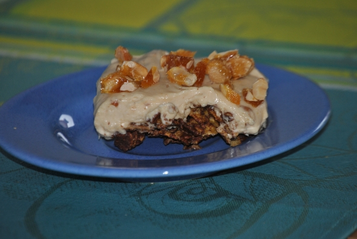

Erdnuss-Karamell-Kuchen

- Zubereitung: ca. 30 Minuten
- Kühlzeit: ca. 7 Stunden
- Ergibt 24 Stücken
- Pro Stück ca. 360 Kalorien
Zutaten
- 100 g Zartbitter-Schokolade
- 100 g Vollmilch-Schokolade
- 150 g Erdnusskerne, ungesalzen
- 50 g Butter
- 200 g Cornflakes
- 350 g Doppelrahm-Frischkäse
- 350 g Ernussbutter (crunchy)
- 150 g Puderzucker
- 400 g Schlagsahne
- 100 g Zucker
Zubereitung
- Die Schokoladen und 100g Erdnüsse grob hacken. Schokolade mit der Butter über einem heißen Wasserbad schmelzen lassen. Cornflakes und die gehackten Erdnüsse unterrühren. Die Masse auf den Boden eines mit Backpapier belegten Backblechs streichen
und ca. 60 Minuten kalt stellen.
- Den Frischkäse, die Erdnussbutter und den Puderzucker verrühren. Die Sahne steif schlagen und unterheben. Die Masse auf den Boden streichen. Mindestens sechs Stunden kalt stellen.
- Inzwischen den Zucker in einer Pfanne schmelzen. Die restlichen Erdnusskerne einrühren. Die Masse auf ein Stück gefettete Alufolie streichen. Auskühlen lassen, grob hacken oder in Stücke brechen. Zum Servieren den Kuchen in Stücke schneiden,
mit dem Erdnuss-Karamell garnieren.